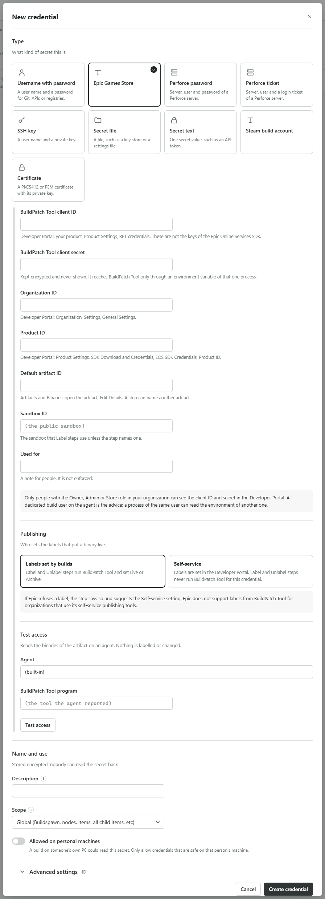
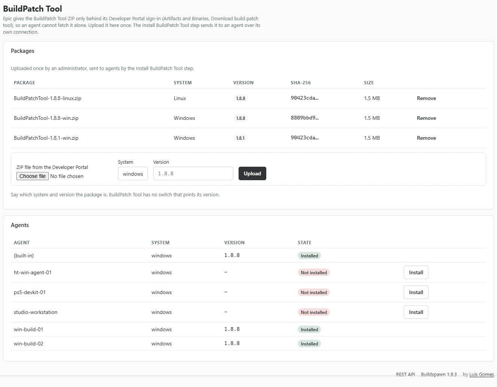

Epic Games Store credential
Store your Epic BuildPatch Tool keys once, and set where the tool lives on each agent.
When to use it
Every Epic step needs an Epic Games Store credential. An administrator or project owner adds it once. Build steps then pick it by name and never see the secret.
Only people with the Owner, Admin or Store role in your Epic organization can see the client ID and secret in the Developer Portal. Use a build user of its own on the agent: a process of the same user can read the environment of another one.
How to set it up
- Open Credentials (for the server under Manage, or for one project in the project's menu) and click Add credentials.
- For Kind, choose Epic Games Store.
- Fill in the fields below. Copy the values from the Epic Developer Portal.
- Choose how labels are set under Publishing.
- Optional: use Test access to check the keys on an agent.
- Click Create.

Every field
| Field | What it does | Default | Example |
|---|---|---|---|
| BuildPatch Tool client ID | The ID of the BuildPatch Tool keys. Developer Portal: your product, Product Settings, BPT credentials. These are not the keys of the Epic Online Services SDK. | Empty | xyz123abc... |
| BuildPatch Tool client secret | The secret that goes with the client ID. Kept encrypted and never shown again. It reaches BuildPatch Tool only through an environment variable of that one process. | Empty | (a secret) |
| Organization ID | Developer Portal: Organization, Settings, General Settings. | Empty | o-4k2m9p... |
| Product ID | Developer Portal: Product Settings, SDK Download and Credentials, EOS SDK Credentials, Product ID. | Empty | 8c1d5f... |
| Default artifact ID | The artifact the steps use when they name none. Developer Portal: Artifacts and Binaries, open the artifact, Edit Details. | Empty | 0f2b8a6c9d1e4c37a5e8b1d6c2f94a70 |
| Sandbox ID | The sandbox that Epic: label binary steps use, unless the step names one. | Empty (the public sandbox) | a1b2c3... |
| Used for | A note for people, for example the game and the platform. It is not enforced. | Empty | Skyforge, Windows |
| Publishing | Who sets the labels that put a binary live. Labels set by builds: Label and Unlabel steps run the BuildPatch Tool and set Live or Archive. Self-service: your organization assigns platforms to the artifact in the Developer Portal, and Epic gives it the Live label. Label and Unlabel steps then never run the tool for this credential. | Labels set by builds | Self-service |
Epic does not support labels from the BuildPatch Tool for organizations that use its self-service publishing tools. Buildspawn cannot tell which kind you are, so you choose. If Epic refuses a label, the step says so and suggests Self-service.
Test access
The Test access card reads the binaries of the artifact on an agent. It labels and changes nothing.
| Field | What it does | Default |
|---|---|---|
| Agent | The machine that runs the test. | (built-in) |
| BuildPatch Tool program | The path of the tool on that agent. | Empty (the tool the agent reported) |
| Test access button | Runs the check with the values typed in the form. The result shows next to the button, for example how many binaries Epic returned, or the reason it refused. | - |
BuildPatch Tool folder
Each agent has a BuildPatch Tool folder setting. It says where the agent keeps the BuildPatch Tool, for example on a fast disk. The Epic steps look for the program there, and Install BuildPatch Tool installs there unless the step names another folder.
- Open Manage › Agents, open the agent and click Configure.
- Under the node properties, tick BuildPatch Tool folder and type the Folder.
- Click Save.
| Field | What it does | Default | Example |
|---|---|---|---|
| Folder | Where this agent keeps BuildPatch Tool. | Empty: tools/buildpatchtool in the agent folder | D:/Tools/BuildPatchTool |
The BuildPatch Tool page
Open Manage › Tools › BuildPatch Tool (administrators only). It has two cards.
Packages
The ZIP files of the tool that you uploaded once. The table shows the package, its system, version, the start of its SHA-256 and its size. Remove deletes a package.
| Upload field | What it does |
|---|---|
| ZIP file from the Developer Portal | The file you downloaded from Epic. |
| System | The system the package is for. Pick from the list. |
| Version | The version of the tool, for example 1.8.8. The tool cannot print its own version, so you say it. |
Click Upload.
Agents
One row per agent with its system, the version of the tool and a state. When a package for that system exists, the row has an Install or Update button that sends the tool at once.

Permissions
The permission group Epic Games Store has two permissions. Grant them in the matrix like any other permission.
| Permission | Needed for |
|---|---|
| Set Live | Starting a build that runs a Label step with the label Live. |
| Delete binary | Starting a build that runs Epic: delete binary. |
The check uses the person who started the build. Without the permission the step fails and says which permission is missing.
A worked example
The studio has one Epic product, Skyforge, with one artifact for Windows. A server administrator adds a credential named Epic Store (Skyforge) with the client ID and secret from the Developer Portal, the organization and product IDs, the artifact ID as the default, and Publishing set to Labels set by builds. They click Test access on win-build-01 and see how many binaries Epic returned. Now any step in the studio's projects can use it.
What you see when it runs
Every Epic step starts with one log line, for example Epic: credential Epic Store (Skyforge), product 8c1d5f..., artifact 0f2b8a..., Publishing: ..., then Epic: the secret is in the environment of that process only. The secret itself is hidden in the log.
Problems and fixes
| Message | What to do |
|---|---|
| The credential has no client ID, client secret, organization ID or product ID | Open the credential and fill in the missing field. |
| Epic did not accept the Client ID and Client Secret | Use the BuildPatch Tool credentials of the product (Product Settings, BPT credentials), not the SDK credentials. |
| Epic says the Client ID has no permission for the artifact | Ask the person who runs the Developer Portal to grant it. |
| Epic did not give access to the binaries of the artifact | Check the Organization ID, Product ID and Artifact ID, and that the keys may create binaries for this artifact. |
| Epic refused the label | Your organization may use self-service publishing. Set Publishing to Self-service, then assign the platform in the Developer Portal. |